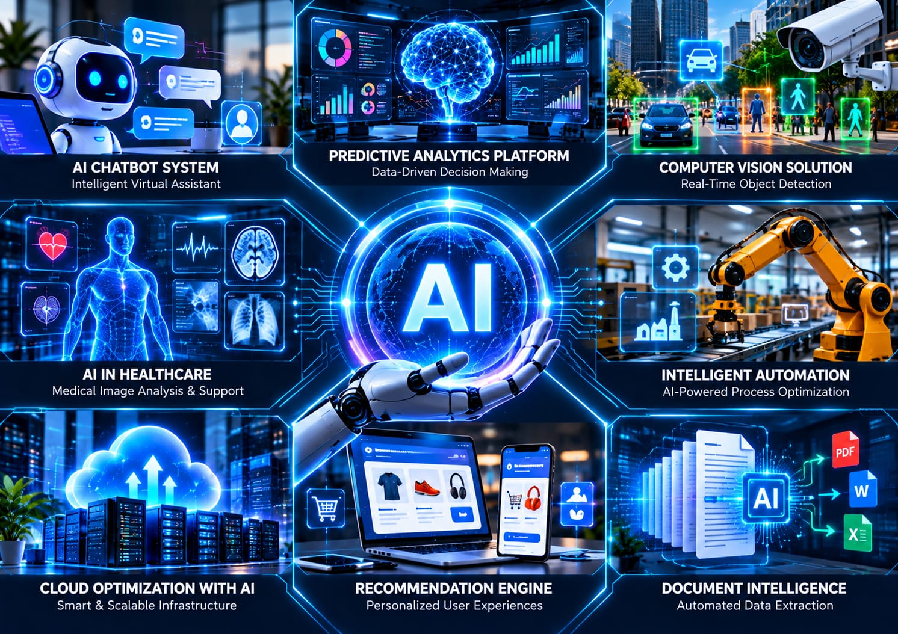
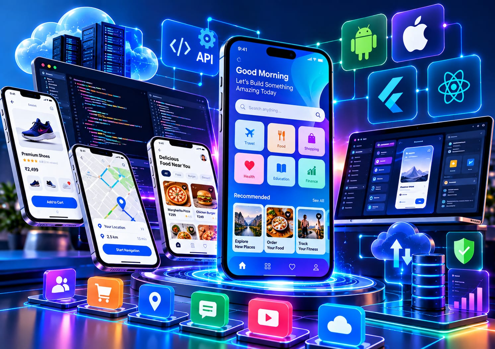
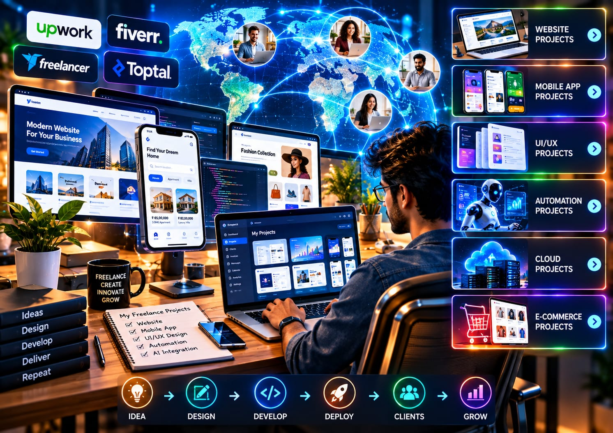
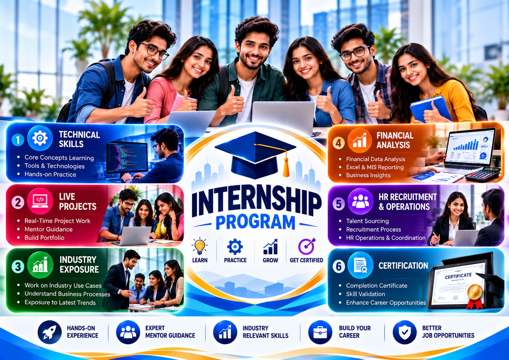

A world of possibilities.
Built one project at a time.
Explore our project areas, from intelligent applications to useful digital experiences.

AI Projects
Intelligence that simplifies decisions
A concept for turning business data into predictions and
practical recommendations.
Intelligence that simplifies decisions
A concept for turning business data into predictions and practical recommendations.
This concept brings business data into a single workflow for analysis, prediction and recommendations. It could include a dashboard for tracking trends, a model for forecasting demand and an assistant for answering common questions. The aim is to help teams review information and make informed decisions.
Web Development Projects
A better digital first impression
A responsive business website concept focused on clear
navigation and accessible design.
A better digital first impression
A responsive business website concept focused on clear navigation and accessible design.
This concept is a responsive business website that helps visitors understand the company, explore its services and find the next step. The scope could include accessible navigation, service pages, a project gallery and an enquiry form, with layouts designed for phones, tablets and desktops.

Mobile & Applications Projects
Everyday workflows, connected
An application concept that brings tasks, updates and
essential tools into one place.
Everyday workflows, connected
An application concept that brings tasks, updates and essential tools into one place.
This application concept gives teams a shared place to manage tasks, view updates and access everyday tools. Potential features include task assignments, progress tracking, notifications and connections to existing business systems. The focus is on reducing scattered information and making daily work easier to follow.

Freelancing Projects
Focused expertise. Flexible delivery.
An example of a scoped digital engagement, from a landing page
to a custom integration.
Focused expertise. Flexible delivery.
An example of a scoped digital engagement, from a landing page to a custom integration.
This concept covers a focused digital engagement with a defined scope and deliverables. Examples include building a landing page, improving an existing interface or connecting two business tools. Work would move from requirements and design through implementation, review and handover.
Healthcare Projects
Thoughtful technology for care
A healthcare portal concept designed around simple information
access and clear workflows.
Thoughtful technology for care
A healthcare portal concept designed around simple information access and clear workflows.
This portal concept helps patients and care teams navigate routine information and administrative tasks. Possible features include appointment requests, patient-facing information and role-based access to relevant records. The focus is on clear workflows and an accessible experience; specific data and integration needs would be defined during planning.

Internship Projects
Learning through building
An example learning project that connects technical
fundamentals with a practical application.
Learning through building
An example learning project that connects technical fundamentals with a practical application.
This learning concept takes participants through building a small working application, such as a task tracker or reporting dashboard. Activities could include defining requirements, designing screens, implementing features, testing and presenting the result. The aim is to connect technical fundamentals with practical development experience.
What’s your next big idea?
Let’s find a way to bring it to life.